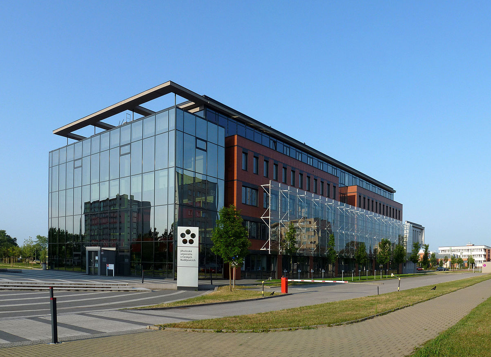

My academic career encompasses a course of study mainly focused on Economics.
I have a high school diploma in Administration, Finance and Marketing from an institute in my home town.
Thanks also to the valuable support of my family, I was supported in starting a university course: I chose the branch of Economics and Business, obtaining a Bachelor's degree in Economic and Social Sciences in July 2021.
These have been three very important years in my life and, above all, they have allowed me to grow both from a human and a social point of view.
I have had the opportunity to meet many new people and gain a great deal of experience, thanks also to the large number of supplementary courses that I have taken to increase my cultural background.
This is me during one of the most important days of my life: the day I graduated!
My path then continued, as I felt it was essential to start a Master's degree course in International Economics and Commerce, curriculum "Business Organisation and strategy".
The course is entirely delivered in English and this is the main point that intrigued me, as it is based on the principle of "teamwork" and "problem solving" in different areas and topics that are covered.
I am currently in my first year of study and I must say that I do not regret at all the choice I made.
Next year I will probably spend 6 months at a foreign university through the "Erasmus" study programme.
As soon as the rankings come out, I will be able to tell you for sure the place and the University that will host me for this period, so if you want to stay updated, stay tuned and I will try to update this section as soon as possible.

It is now official: I am proud to announce that from September 2022 to February 2022 I will spend 6 months in the Czech Republic, through the Erasmus + programme, at the South Bohemian University of Economics.
I am looking forward to meeting new people and gaining new experiences. I am sure it will be an unforgettable experience.
This section will probably be particularly short, but I wanted to include it anyway to talk a bit about my passions.
Firstly, one of my great passions that I have rediscovered in this period is the computer environment.
Yes, as you may have noticed from the layout of this 'small website', the work behind it is purely amateurish.
I have discreetly learned html and CSS to create what you see here.
And I want to assure you that I won't stop here: in my 'spare time' I love learning new things and keeping myself informed on topics of interest to me.
I'm taking some Python courses to learn programming on a program that is very much in demand in business. Unfortunately, this knowledge is not passed on within the university environment, so I decided to roll up my sleeves and study as much as possible on my own, trying, failing and above all persevering.
Outside of computing and programming, I am clearly a lover of technology in all its aspects: from video gaming, vlogs, video editing and laptops in general.
Another great passion of mine is also music: I love to listen to and at the same time play some good music when I get the chance.
I wrote "playing" because up until a few years ago I was still "playing the accordion", a rather unusual instrument that was handed down to me by my uncle, who in turn learned it from my grandfather.
In my family we are all more or less musicians: from my mother (a graduate), my father for passion and my brother as well.
So when I can and when I succeed I try to find some space for this too, even if unfortunately since university started I have had to weigh up my "hobbies" and leave out some activities for this period.
Finally, another great passion is the one for the sport activity in all its aspects: about this you will find a more in-depth argumentation in the section MY ACTIVITIES in which I will tell you some of my initiatives and my "positions" covered during the path of my life.
In this section I would like to talk about current and past "experiences" and "projects" that I have had the opportunity to carry out thanks to the university environment in general.
One experience that I found particularly interesting is the one I had last year thanks to a course I took at the University of Marketing, which is called "Learning by Doing".
The aim of the project was to put a group of students in contact with a local company to discuss with their representatives the possibility of carrying out targeted marketing campaigns depending on the sector, the type of business, the type of clientele and various other information.
The company in question was Nanosystems S.r.l. which dealt with cloud technology in terms of storage space, remote control, web support, and other digital services.
In collaboration with Prof. Temperini Valerio from the Department of Management, who teaches the
Marketing course, and with NanoSystems S.r.l a market survey was carried out to gather customer
customer opinions and information on the strategies adopted by the competition.
that could express how the market perceives the company's products.
Therefore, the company area in which the project was developed is the Marketing and Sales Area:
the final output of the project was a report of about 5 pages and a PowerPoint presentation through which we had to be able to promote a real effective marketing campaign for the company itself.
I found it a particularly engaging and topical experience, which allowed us to touch more closely on current issues.
Another project is currently running under the name "Startup Festival".
This is a collaboration between the Marche Region and a wide range of local entrepreneurs, the aim of which is to illustrate to the students who can participate (i.e. selection interviews) the modus operandi of an entrepreneurial mentality: how a start-up is born, develops and grows in all its aspects.
The experience is currently in progress as it has only just started, so if you want updates on the subject do not hesitate to visit the site whenever you need or want.
Finally, I had the opportunity to participate in an International Internship in collaboration with Ohio University, Istao and the Università Politecnica delle Marche.
This internship is called the 'Global Consulting Programme' and allowed me to measure myself in an international context, within a group of students from all over the world.
It was a fantastic experience and I am proud to announce the end of a fantastic experience named Global Consulting Program (GCP).
The GCP is jointly run by the "G. Fuà" Faculty of Economics Università Politecnica delle Marche, the Ohio University and ISTAO - Istituto Adriano Olivetti as I anticipated earlier.
I would like to personally thank my faculty for this amazing opportunity as well as all the American students and Professors at Ohio University for making this adventure unforgettable.
A special thank you to the company with which we collaborated Grottini and in particular Grottinilab which allowed us to learn more about topics related to the artificial intelligence market, enabling us to continuously improve our project.
Through close cooperation with the company, I was able to improve the cross-cultural experience with American students, and I had the opportunity to work in an international context.
A wonderful experience that I will carry in my life forever!
Here you will be able to find the link to the company's website and the presentation made on the day of the discussion in front of the GrottiniLab manager who evaluated our project and asked all the relevant questions.
.JPG "MY GRADUATION PICTURE") My path then continued, as I felt it was essential to start a Master's degree course in International Economics and Commerce, curriculum "Business Organisation and strategy".
My path then continued, as I felt it was essential to start a Master's degree course in International Economics and Commerce, curriculum "Business Organisation and strategy".  Finally, I had the opportunity to participate in an International Internship in collaboration with Ohio University, Istao and the Università Politecnica delle Marche.
Finally, I had the opportunity to participate in an International Internship in collaboration with Ohio University, Istao and the Università Politecnica delle Marche.